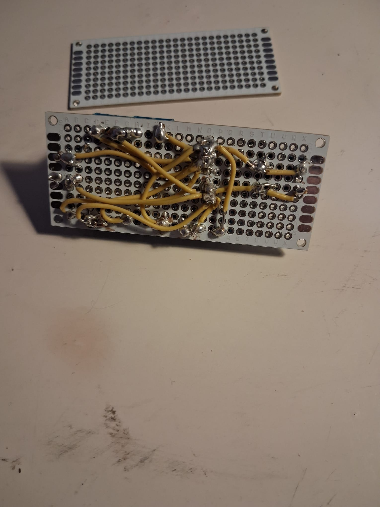
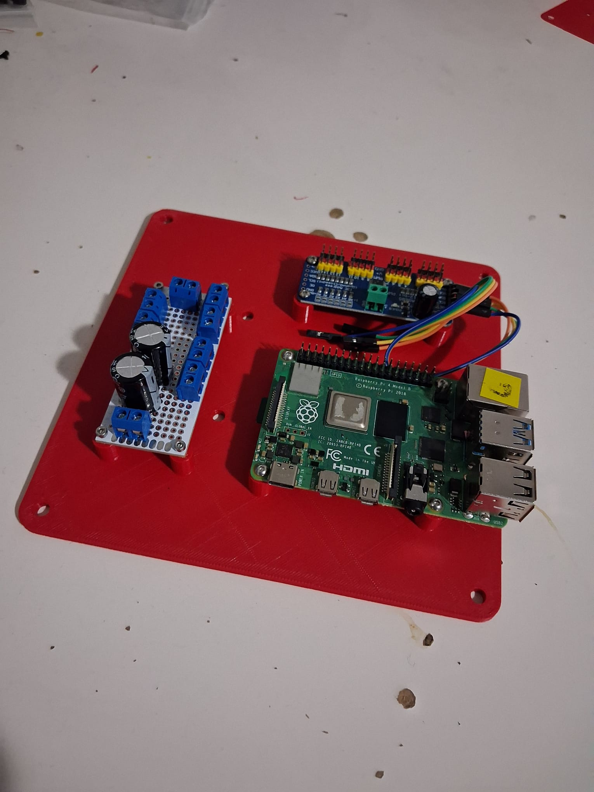

6-DOF Modular Robotic Manipulator
A lightweight robotic arm focussed on modular joints, controls and kinematics-based motion.
Overview
This project focuses on the design and development of a desktop-scale 6-DOF robotic manipulator, with emphasis on mechanical robustness, modularity, and embedded control. The system is being developed incrementally, starting from power distribution and base actuation, with future extensions into kinematics-based motion planning, teleoperation, and vision-guided control.
What's Completed So Far?
-
Mechanical Design and Assembly
- Designed a rigid base enclosure to house computation, power distribution, and actuation
- CAD and 3D printing of:
- Base enclosure
- Electronics mounting plate
- Servo mounting interface
- Designed base yaw joint interface using metal servo horn coupling
- Considered alignment, backlash reduction, and serviceability during design
-
Power & Electronics Architecture
- Designed and built a custom power distribution board (PDB) for multi-servo operation
- Implemented:
- Bulk input capacitors for transient current handling
- Separate logic (Raspberry Pi) and actuator power domains
- Integrated:
- Raspberry Pi (high-level control)
- PCA9685 PWM driver (servo control)
- Verified individual as well as bulk servo operation using low-level PWM control
-
Actuator Selection & Sizing
- Performed torque calculations for joint loading for total load capacity of 350 g and reach of 0.25 m
- Selected servos based on:
- Torque requirements
- Joint role (base, shoulder, wrist)
- Form factor and availability
- Validated control ranges experimentally (pulse width vs angle)
Prototyping Base

6V IN distributed to 7 channels trhough 2 big capacitors (1000 uF 35V)


PCA 9685 and PDB
System Architecture
The system uses a central Raspberry Pi for high-level coordination, with a PCA9685 PWM controller handling deterministic servo actuation. Power distribution is handled via a custom-built board to isolate motor transients and ensure stable operation during load changes.
Current Focus
- Designing and printing the base yaw joint and shoulder pitch interface
- Ensuring mechanical stiffness and repeatability
- Establishing consistent joint zeroing and calibration procedures
Planned Next Steps
- Complete mechanical assembly of all 6 joints
- Implement joint-level calibration and limits
- Develop:
- Teleoperation interface
- Keyframe-based motion playback
- Introduce forward and inverse kinematics
- Build a simulation/digital twin (Gazebo / Isaac Sim)
- Extend toward vision-guided manipulation